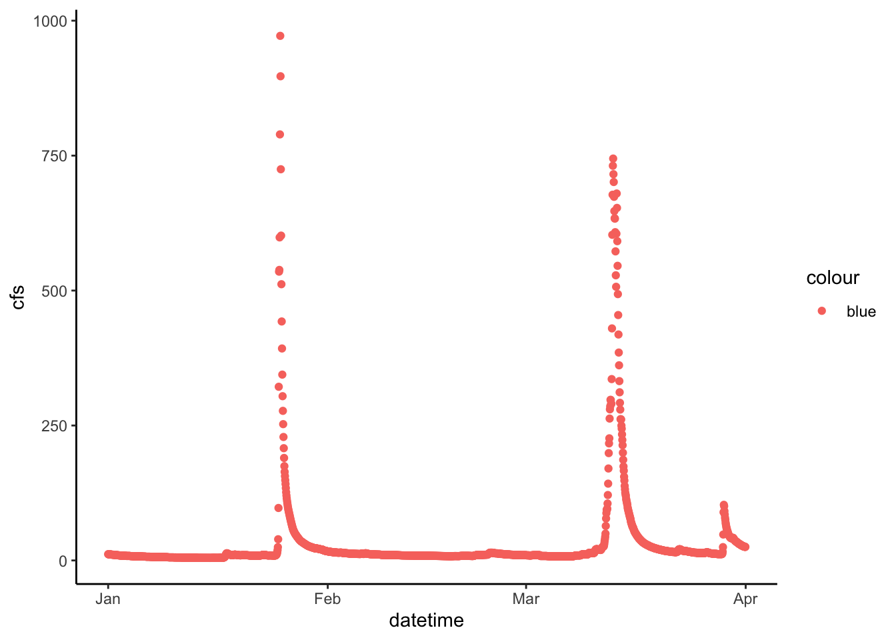

Chapter 8 Lab 2: Statistics in hydrology
Address each of the questions in the code chunk below and/or by typing outside the chunk (for written answers).
8.1 Problem 1
Load the tidyverse and patchwork libraries and read in the flashy and pine_nfdr datasets.
library(tidyverse)
library(patchwork)
flashy <- read_csv("flashy.csv")
pine_nfdr <- read_csv("pine_nfdr.csv")Using the flashy dataset, generate two new dataframes. One for the “WestMnts” and one for the “NorthEast” AGGECOREGION. Name these flashy_west and flasy_ne. Next make pdfs of the average basin rainfall (PPTAVG_BASIN) for the WestMnts (flashy_west) and NorthEast (flashy_ne) agricultural ecoregions. On each pdf add vertical lines showing the mean and median. Label the x axis “Average precipitation (mm)” and the y “Density”. Set the x scale limits to 0 - 500 using xlim(c(0, 500)). Save each ggplot as an object and stack them on top of each other. Provide a caption below the figure that states which is on top, which is on bottom, and which color is the mean and which is the median.
# Make the ggplot for the NE
flashy_ne <- flashy %>%
filter(AGGECOREGION == "NorthEast")
mean_ppt_ne <- mean(flashy_ne$PPTAVG_BASIN)
median_ppt_ne <- median(flashy_ne$PPTAVG_BASIN)
ne <- flashy_ne %>%
ggplot(aes(PPTAVG_BASIN)) +
stat_density() +
geom_vline(xintercept = mean_ppt_ne, color = "blue") +
geom_vline(xintercept = median_ppt_ne, color = "light blue") +
labs(x = "", y = "Density") +
xlim(c(0, 500))# Make the ggplot for the Mountain West
flashy_west <- flashy %>%
filter(AGGECOREGION == "WestMnts")
mean_ppt_west <- mean(flashy_west$PPTAVG_BASIN)
median_ppt_west <- median(flashy_west$PPTAVG_BASIN)
west <- flashy_west %>%
ggplot(aes(PPTAVG_BASIN)) +
stat_density() +
geom_vline(xintercept = mean_ppt_west, color = "blue") +
geom_vline(xintercept = median_ppt_west, color = "light blue") +
labs(x = "Average precipitation (mm)", y = "Density", caption = "Figure 1. PDF of average P for NE (top) and West (bottom) ag-ecoregions with mean (blue) and median (light blue)") +
xlim(c(0, 500)) +
theme(plot.title = element_text(hjust = 0))ne/west
8.2 Problem 2
Calculate the SD and IQR for precipitation for the MtnsWest and Northeast ag-ecoregions. Using the SD, IQR and density plots from above, comment on the distributions of precipitation for the MtnsWest and Northeast ag-ecoregions. Which has a larger spread?
sd_west <- sd(flashy_west$PPTAVG_BASIN)
iqr_west <- IQR(flashy_west$PPTAVG_BASIN)
sd_ne <- sd(flashy_ne$PPTAVG_BASIN)
iqr_ne <- IQR(flashy_ne$PPTAVG_BASIN)8.2.1 Answer to 2
The mountains west (West) has a larger spread. The PDFs (Figure 1), and the SD and IQR values for NE and West all indicate as such. In figure 1 a relative narrow distribution centered around a P value just above 100 mm is indicated for NE, while the West distribution has a mode just below 100 mm but a long tail skewed out to values near 500 mm. The SD for the west (87) is considerably larger than that for NE (17), as is the IQR: 132 for West and 20 for NE.
8.3 Problem 3
Next, make Q-Q plots and perform a Shapiro-Wilk tests for normality on the precipitation data sets for the MtnsWest and Northeast ag-ecoregions. Using the results from these tests discuss whether or not the distributions are normal. Also if you based your decision as to whether the data sets were normal on the pdfs you developed in problem 1, the Q-Q test, and Shapiro-Wilk test would each lead you to same conclusion?
shap_west <- shapiro.test(flashy_west$PPTAVG_BASIN)
qqnorm(flashy_west$PPTAVG_BASIN)
shap_ne <- shapiro.test(flashy_ne$PPTAVG_BASIN)
qqnorm(flashy_ne$PPTAVG_BASIN)8.3.1 Answer to problem 3
Neither of the data sets are normal. The PDF and the Q-Q test for the NE might incorrectly suggest this data set is normal. However, the Shapiro tests indicate that both the NE and West precipitation data are non-normal (p < 0.05). The point here is that PDFs and Q-Q plots are good EDA but are subjective and qualitative. They can give you as sense if a data set is clearly not normal (e.g. the West precip) but can’t really tell you that a data set IS normal. To confirm that you need a quantitative test of normality, like the Shapiro test.
8.4 Problem 4
Make a plot that shows the distribution of the data from the PINE watershed and the NFDR watershed (two pdfs on the same plot). Log the x axis, label the x axis “Flow (cfs)” and the y axis “Density”.
pine_nfdr %>%
ggplot(aes(cfs, fill = StationID)) +
geom_density(alpha = 0.5) +
scale_x_log10() +
labs(x = "Flow (cfs)", y = "Density", fill = "Station")
8.5 Problem 5
You want to compare how variable the discharge is in each of the watersheds in question 4. Which measure of spread would you use and why? If you wanted to measure the central tendency which measure would you use and why?
8.5.1 Answer to 5
The best measure of spread when comparing across locations is the CV because it has no units and is standardized to the mean (CV = SD/mean), so it is generally the metric of choice when comparing across locations (e.g., gauges) with different magnitudes. The median is good measure of central tendency as it is resistant to extreme values. All that said, to be robust you would typically assess all of the statistical metrics of the distributions (i.e., mean, median, SD, variance, IQR, CV).
8.6 Problem 6
Compute 3 measures of spread and 2 measures of central tendency for the PINE and NFDR watershed. (hint: use group_by() and summarize()) Be sure your code outputs the result. Which watershed has higher flow? Which one has more variable flow? How do you know?
flow_sum <- pine_nfdr %>%
group_by(StationID) %>%
summarize(var = var(cfs), sd = sd(cfs), cv = sd(cfs)/mean(cfs), mean = mean(cfs), median = median(cfs), iqr = IQR(cfs))8.6.1 Answer to 6
NFDR has lower mean and median but a higher CV. This example demonstrates that the CV is the best measure of spread when comparing across locations with differing magnitudes. The SD, variance, and IQR for Pine are larger, but this is simply a function of the magnitudes of values. When correcting for mean (i.e., CV = SD/mean) we see that NFDR in fact has larger spread relative to the mean.